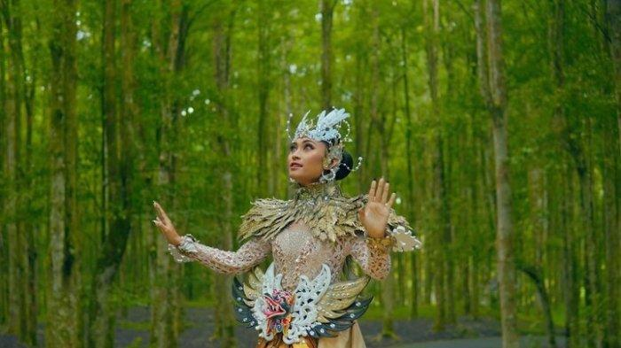

About
Indonesian culture is the result of various tribes, religions, cultures and long history. Indonesian culture is rich and diverse, covering many aspects, such as language, art, music, dance, culinary delights and traditions.
Indonesian cultures
Indonesia is an archipelagic country consisting of thousands of islands, so it has various ethnic groups. The major tribes in Indonesia include Javanese, Sundanese, Balinese, Batak, Minangkabau, Papuan, and many others. Each ethnic group has its own language, customs and traditions.
Indonesian culture is a valuable asset and an integral part of this nation's identity. Despite its diversity, Indonesian culture as a whole reflects the spirit of mutual cooperation, tolerance and friendliness of its people.
Here are some important points about Indonesian culture:
- The official language of Indonesia is Bahasa Indonesia, which is used in official communication and education throughout the country.
- Indonesia is a country with diverse religions. Islam is the majority religion, followed by Christianity, Hinduism, and Buddhism.
- Traditional Indonesian arts include dance, music, fine arts and performing arts. Traditional dances such as the Kecak Dance, Legong Dance, and Saman Dance are examples of the richness of Indonesian dance arts.
- Indonesian culinary is very diverse and delicious. Typical Indonesian food involves various herbs and spices such as turmeric, ginger, candlenuts, and lemongrass.
- Every tribe in Indonesia has its own traditional clothing. For example, batik is a traditional Indonesian cloth decorated with distinctive motifs.
Galery
- All
- Traditional Clothes
- Typical Foood
- Custom Home
- Traditional
.jpeg)
Karo Batak Traditional Clothing
It is called "red cloth" because the uis gara is dominated by red, or sometimes combined with other colors such as black and white. It is then decorated with woven gold and silver threads which makes it look expensive and elegant.
.jpeg)
Rawon
Indonesian cuisine originates from Ponorogo in the form of black meat soup with a mixture of special spices using kluwek. This food is more than 1,000 years old.

Joglo House
Joglo is the name for a Central Javanese traditional house. This building is interesting to study, both from a historical and architectural perspective, which is full of Javanese philosophical values.

Jaipong Dance
Jaipong dance is a dance that originates from West Java. This West Javanese dance art was created by artists from Bandung named Gugum Gumbira and H Suwanda from Karawang.

Limpapeh Rumah Nan Gadang
The Limpapeh Rumah Nan Gadang traditional clothing consists of several parts, each of which is unique. - The part of the head covering is called tingkuluak. - Traditional clothes are called batabue clothes.
.jpeg)
Pempek
Pempek is a typical food from Palembang - South Sumatra. Pempek is usually served with a sauce called vinegar which has a sour, sweet and spicy taste.
.jpeg)
Tongkonan
The Tongkonan traditional house is one of the traditional houses of the Toraja people, South Sulawesi Province. Tongkonan is a traditional house of the Toraja people which is a place of residence, traditional power and development of the social and cultural life of the Torajan people.
{kind=link}
Saman Dance
Saman dance is a medium for conveying messages or da'wah. This dance reflects education, religion, manners, heroism, solidarity and togetherness.
.jpeg)
Clothes Bodo atau Clothes Labbu
Labbu clothes are long-sleeved Bodo clothes. Meanwhile, Bodo clothes are rectangular in shape and have short sleeves. This shirt looks like a bracket shirt without seams.
.jpeg)
Madurese Satay
Madura satay is a type of satay food made from the basic ingredients of chicken, goat and beef which is prepared with a unique spice blend from Madura, East Java.
{kind=link}
Kebaya House
The house is called the kebaya house because it was inspired by the kebaya clothing, which has a shape like a folded saddle. When viewed from the side, the folds look like kebaya folds. Even though it is not very popular, this kebaya house is officially recognized as a Betawi traditional house.
{kind=link}
Mask Dance
Mask Dance is a dance where the dancers wear masks. Masks have existed in the world since pre-historic times. Widely used in dances that are part of traditional ceremonies or retellings of ancient stories from ancestors